<meta charset="utf-8">
<title>Content Look</title>
<meta name="claude:viewport-fit-sides" content="cover">
<link rel="stylesheet" href="https://fonts.googleapis.com/css2?family=IBM+Plex+Mono:ital,wght@0,400;0,600;1,700&display=swap">
<style>
/* Layout: a review wall. Analysis first, then posts in a row, then reel frames in a strip. Dark by choice. */
:root{color-scheme:dark;--bg:#000;--panel:#0d0e13;--line:#262833;--fg:#fff;--mute:#9ea2b4;--acc:#e8ff00;--pink:#ff2e88;--cyan:#00f0d8;--mono:"IBM Plex Mono",ui-monospace,Menlo,monospace}
*{box-sizing:border-box}
body{margin:0;background:var(--bg);color:var(--fg);font-family:var(--mono);font-size:14px;line-height:1.6}
.wrap{max-width:1240px;margin:0 auto;padding-left:max(16px,env(safe-area-inset-left,0px));padding-right:max(16px,env(safe-area-inset-right,0px));padding-block:48px 80px}
h1{font-size:clamp(1.8rem,5vw,3rem);margin:0 0 6px;letter-spacing:.04em;text-wrap:balance}
h2{font-size:1.25rem;letter-spacing:.14em;text-transform:uppercase;margin:64px 0 6px;color:var(--acc)}
h3{font-size:1rem;margin:0 0 8px;letter-spacing:.06em}
p{margin:0;max-width:72ch}
.lbl{font-size:11px;letter-spacing:.22em;text-transform:uppercase;color:var(--mute)}
.lede{font-size:1.02rem;margin-top:14px}
.cols{display:grid;grid-template-columns:repeat(auto-fit,minmax(280px,1fr));gap:16px;margin-top:20px}
.box{background:var(--panel);border:1px solid var(--line);padding:18px 20px;min-width:0}
.box ul{margin:8px 0 0;padding-left:18px;display:grid;gap:5px}
.box b{color:var(--acc);font-weight:600}
.map{overflow-x:auto;margin-top:20px;border:1px solid var(--line)}
table{border-collapse:collapse;width:100%;min-width:640px;font-size:13px}
th,td{padding:10px 14px;border-bottom:1px solid var(--line);text-align:left;vertical-align:top}
th{font-size:11px;letter-spacing:.18em;text-transform:uppercase;color:var(--mute);font-weight:600;background:var(--panel)}
td:first-child{color:var(--mute)}
figure{margin:0;min-width:0}
figure img{display:block;width:100%;height:auto;border:1px solid var(--line)}
figcaption{margin-top:10px;font-size:12.5px;color:#cfd2dc}
figcaption b{color:var(--fg)}
.posts{display:grid;grid-template-columns:repeat(auto-fit,minmax(300px,1fr));gap:22px;margin-top:22px}
.reels{display:grid;grid-template-columns:repeat(auto-fill,minmax(200px,1fr));gap:16px;margin-top:22px}
.refs{display:grid;grid-template-columns:repeat(auto-fit,minmax(320px,1fr));gap:16px;margin-top:20px}
.honest{border-left:4px solid var(--pink);padding-left:16px;margin-top:22px;display:grid;gap:8px}
.honest b{color:var(--pink)}
.ba{display:grid;grid-template-columns:repeat(3,minmax(0,1fr));gap:12px;margin-top:16px}
.ba figure img{opacity:.85}
.fix{margin-top:18px;display:grid;gap:6px;padding-left:18px}
.fix li b{color:var(--acc)}
@media (max-width:640px){.ba{grid-template-columns:repeat(3,minmax(0,1fr));gap:6px}.ba figcaption{font-size:11px}}
</style>

<main class="wrap">
  <p class="lbl">justjatin · content look · round 5 · posts · 10 nov 2026</p>
  <h1>Your language, at their production level</h1>
  <p class="lede">Only the design and craft of your four references were looked at, never the topic. Below: what makes them land, how each move maps onto your language, and ten first drafts (3 posts, 7 reel frames). The drafts are rendered in a real 3D lighting pass with your own photos, not drawn flat.</p>

  <h2>Round 5 · silver plates, round 3 type colours</h2>
  <p>Your notes: <i>"switch these normal font's to our silver plate look but make the text look bold"</i>, then <i>"also keep the old font colour scheme from R3"</i>.</p>
  <ul class="fix">
    <li><b>The small words are silver plates</b>, the ABOUT name tag and copy plate: paper dithered from white into lavender silver in 3px Bayer cells, skewed, with an ink rule and a hard ink drop.</li>
    <li><b>The words are bold:</b> ink Plex Mono italic 700, thickened with an ink stroke.</li>
    <li><b>Headlines are back to round 3's colours</b> on every world: acid fill, green foot, pink rim. The dithered one-colour shards from round 4 stay.</li>
  </ul>
  <div class="posts">
    <figure><figcaption><b>STOP editing SAFE.</b></figcaption></figure>
    <figure>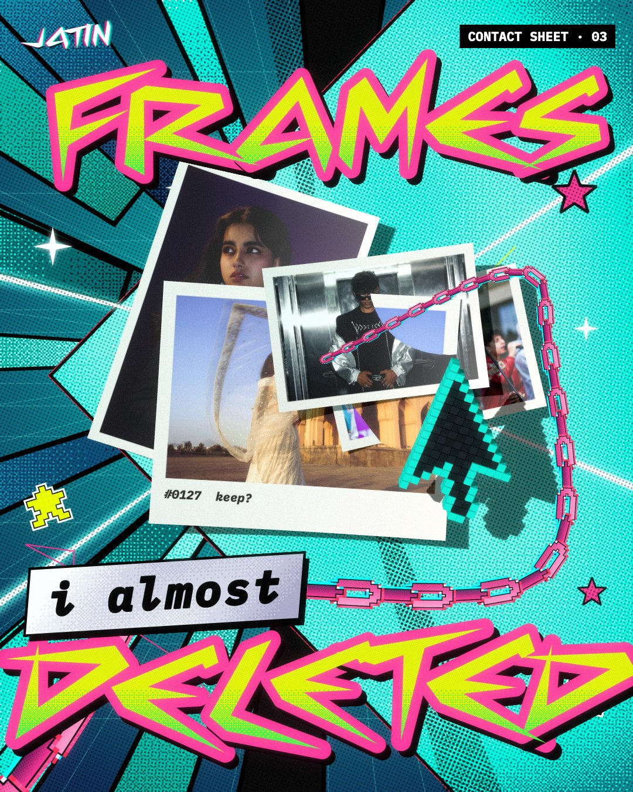<figcaption><b>FRAMES i almost DELETED.</b></figcaption></figure>
    <figure><figcaption><b>CUT IT in one NIGHT.</b></figcaption></figure>
  </div>
  <p class="lbl" style="margin-top:28px">Round 4, for comparison</p>
  <div class="ba">
    <figure>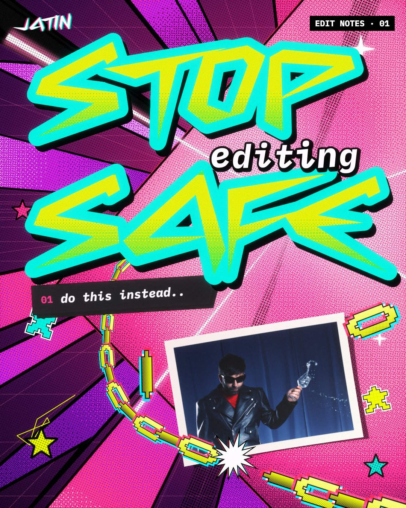<figcaption>R4</figcaption></figure>
    <figure>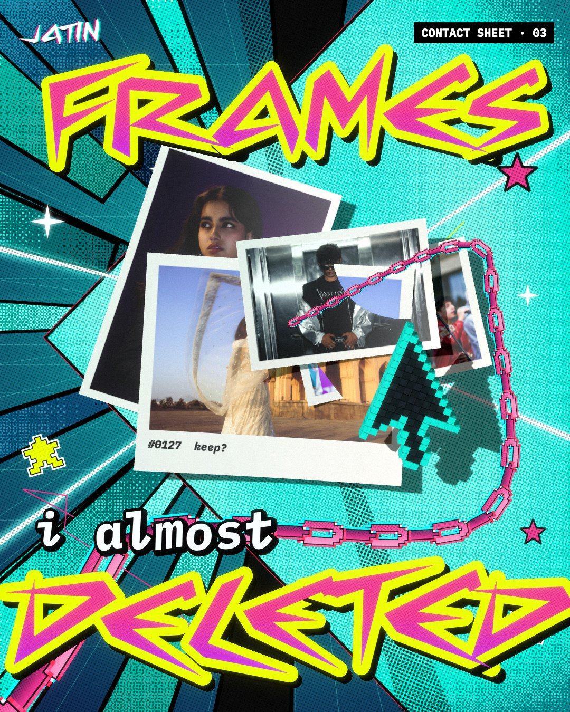<figcaption>R4</figcaption></figure>
    <figure>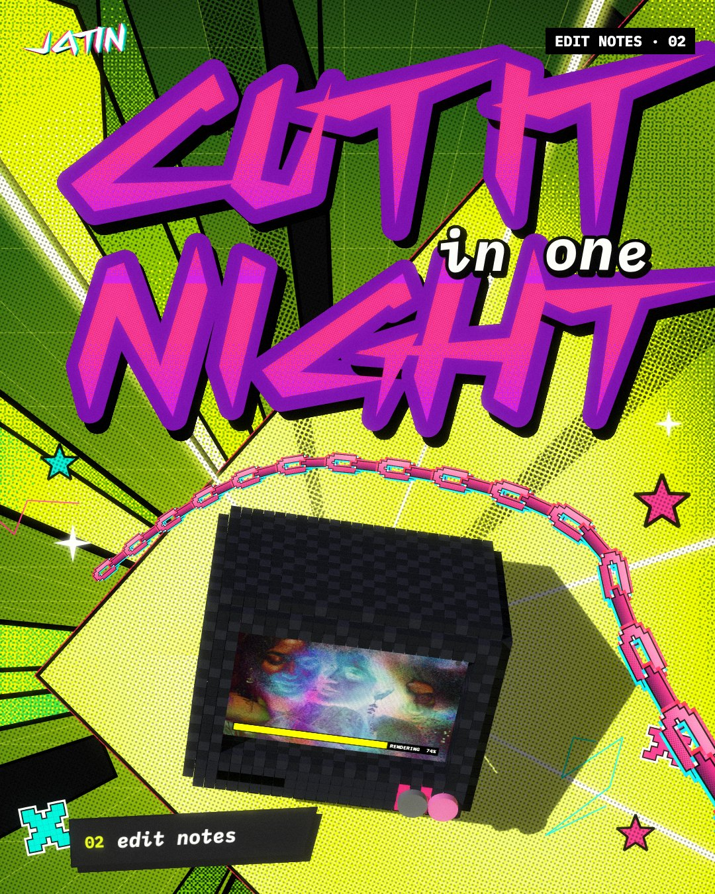<figcaption>R4</figcaption></figure>
  </div>

  <h2>Round 4 · one colour world per post</h2>
  <p>Your note: <i>"the scattered shards in the background needs to have the same dither look we have and keep the same colour consistency as colour theme of the post itself and the text should be contrasting colour to that colour scheme."</i></p>
  <ul class="fix">
    <li><b>Shards dither now.</b> Every shard steps through a 4-colour ramp in the site's 4×4 Bayer cells, the same texture as the wedge and the chain. The flat fills, gradients and stripe prints are gone. Black shards stay black.</li>
    <li><b>One family per post.</b> Pink: pinks, magentas and purples. Cyan: cyans, teals and deep blues. Acid: acids and greens. The multi-colour shard palette is gone.</li>
    <li><b>The type fights the world.</b> Same treatment, contrasting colours. On pink: an acid fill with a green foot and a cyan rim. On cyan: a pink fill with a magenta foot and an acid rim. On acid: a pink fill with a magenta foot and a purple rim.</li>
  </ul>
  <p class="lbl" style="margin-top:28px">Round 3, for comparison</p>
  <div class="ba">
    <figure>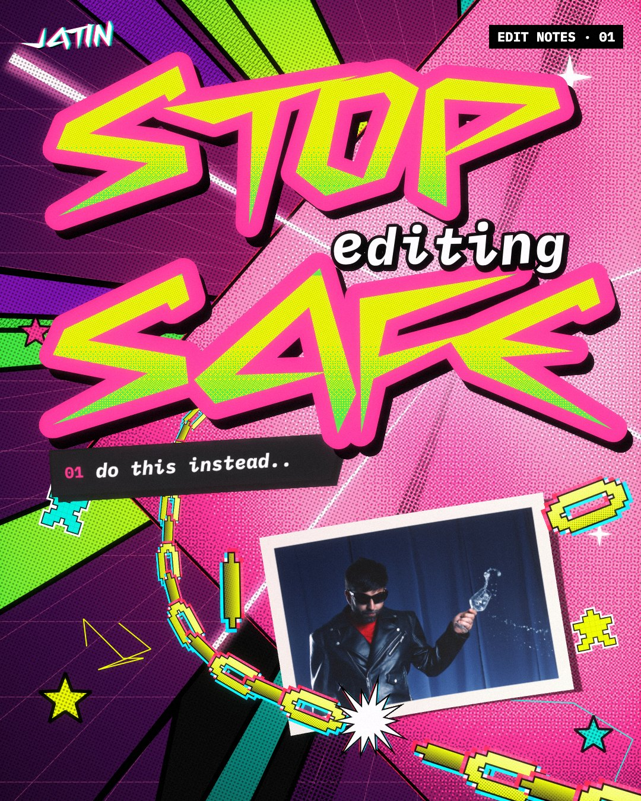<figcaption>R3: mixed flat shards.</figcaption></figure>
    <figure>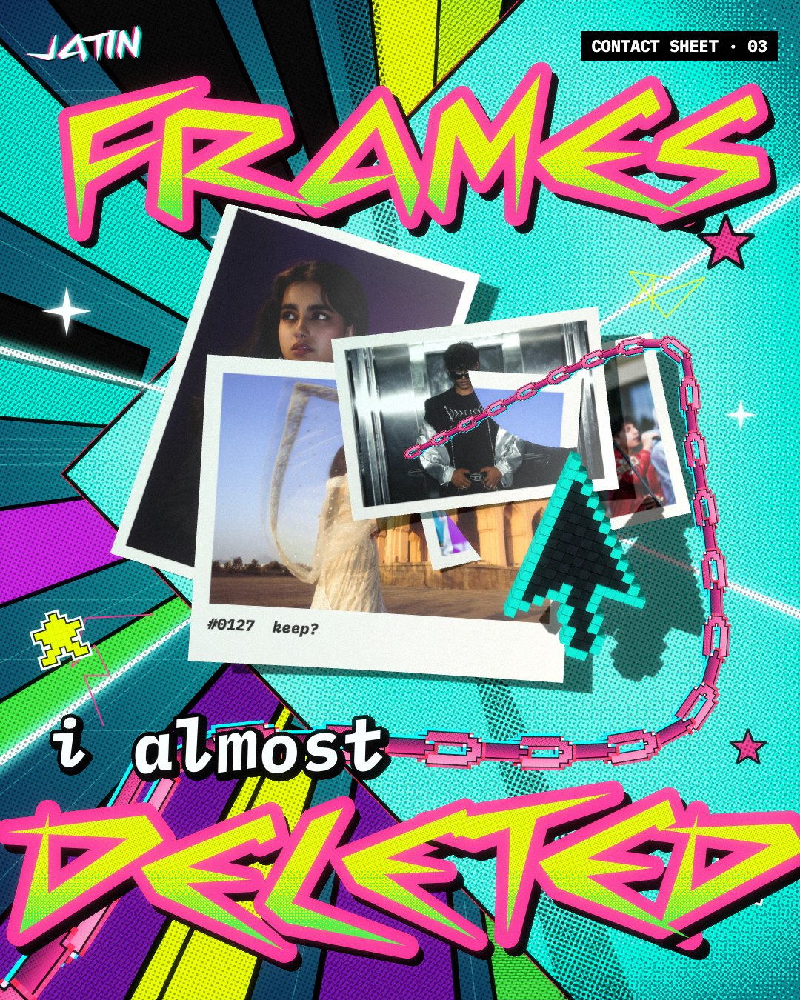<figcaption>R3</figcaption></figure>
    <figure>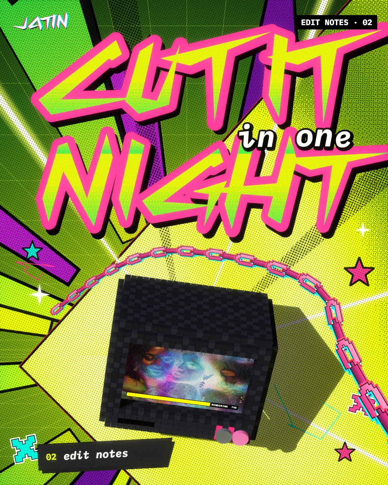<figcaption>R3</figcaption></figure>
  </div>

  <h2>Round 3 · posts, in your world</h2>
  <p>Your note: <i>"it doesnt feel like it captured my style. and i can see the elements of website design but that's [not] how i remember my website to look like … i like our chain design and our curser … i do prefer the font design in the current so keep that."</i> Plus two new references: bold flat graphic layers stacked behind one real object.</p>
  <p style="margin-top:10px">That's the move. Round 2 was props on a Tron floor. Round 3 puts the ground of every post in <b style="color:var(--acc)">the site's own world</b>, painted flat, the way their paper shapes and starbursts sit behind the notebook. Your work stands on it in 3D with real light and shadow:</p>
  <ul class="fix">
    <li><b>The menu, as the ground:</b> the site's own shard generator (same fills, stripe and hatch prints, thick ink) bursting out of a vanishing point, sky pooled at the light, perspective grid, light streaks with white-hot cores, ink streaks, the bloom.</li>
    <li><b>The accent wedge</b> in Bayer steps with its red/cyan edge, one accent per post: pink, cyan, acid. The acid shades go deep green, not muddy olive.</li>
    <li><b>Your chain, the real one:</b> the site's pixel-piece link sprites (ported from the site's code) on a path that comes out of the light, small and far, and grows toward the lens. It casts a real shadow over the print and snaps there with a white impact burst, links flung up high.</li>
    <li><b>The menu's furniture:</b> P5 stars, sparkles, pixel stickers, wire scribbles. The labels are the black menu plates, with an accent number.</li>
    <li><b>Kept:</b> the hand-sticker type exactly as it was, the cursor, the 3D prints and light. The CRT on the third post is now where the light comes from, like the ABOUT handycam.</li>
  </ul>
  <p class="lbl" style="margin-top:28px">Round 2 (electric, on a grid) and round 1, for comparison</p>
  <div class="ba">
    <figure>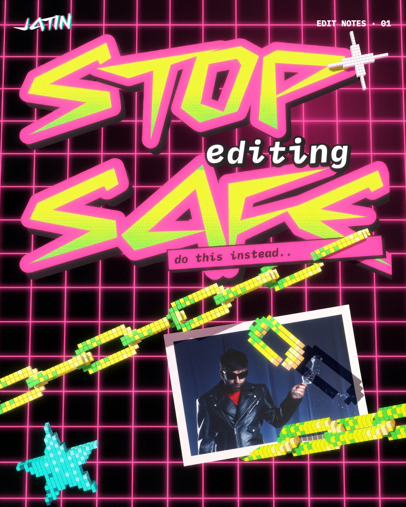<figcaption>R2: props on a grid.</figcaption></figure>
    <figure>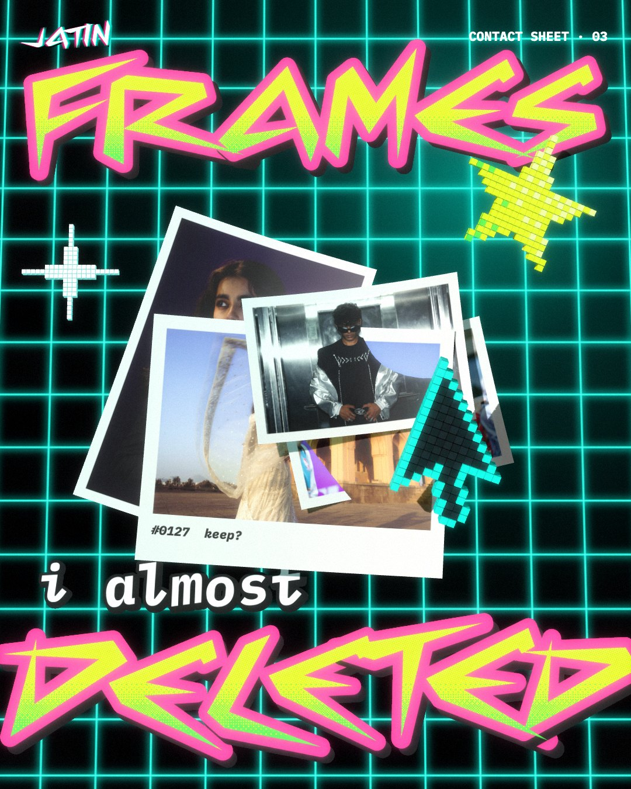<figcaption>R2: cyan grid.</figcaption></figure>
    <figure>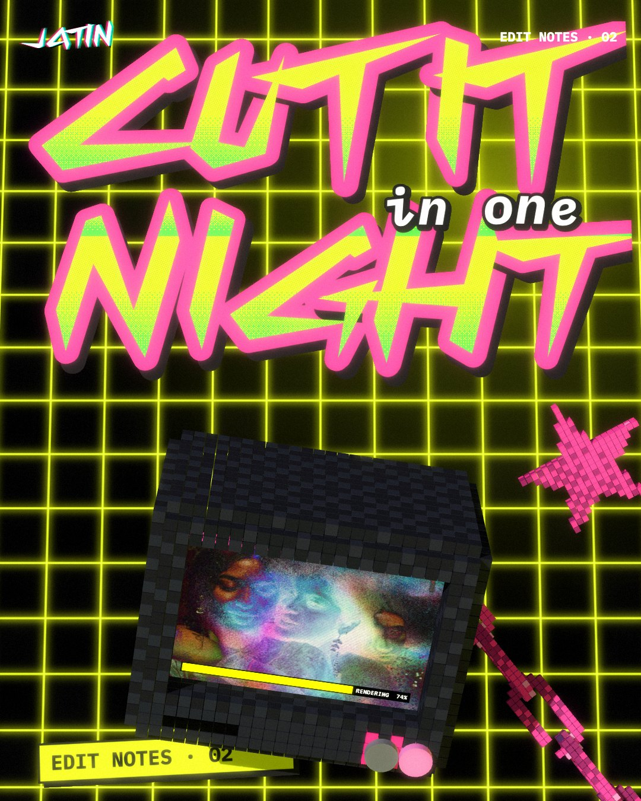<figcaption>R2: acid grid.</figcaption></figure>
    <figure>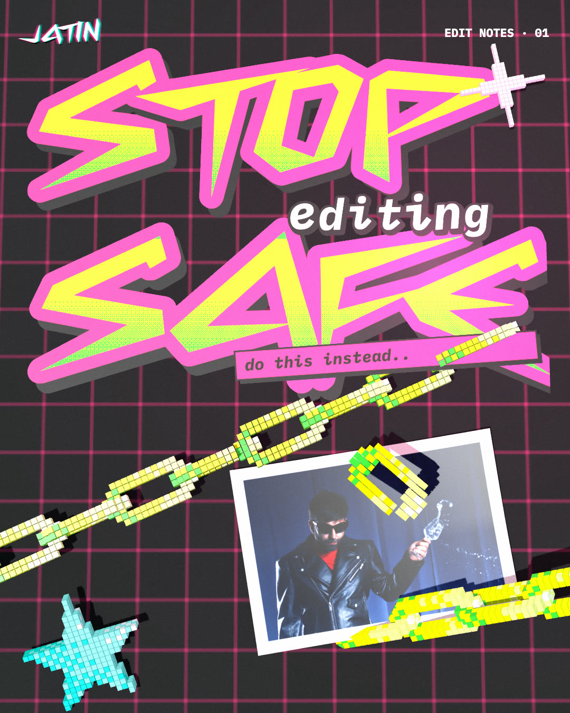<figcaption>R1: washed out.</figcaption></figure>
    <figure>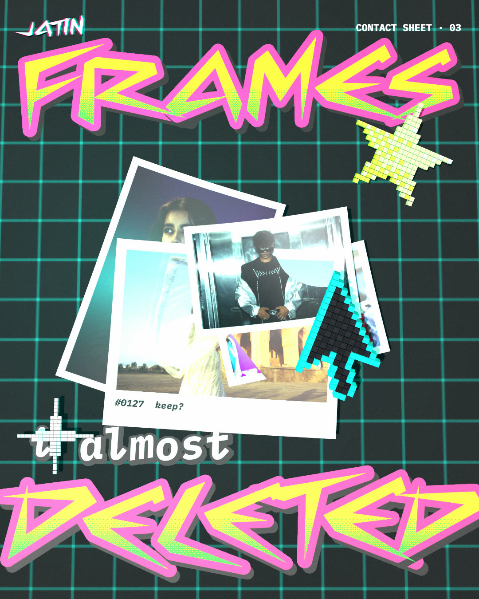<figcaption>R1</figcaption></figure>
    <figure>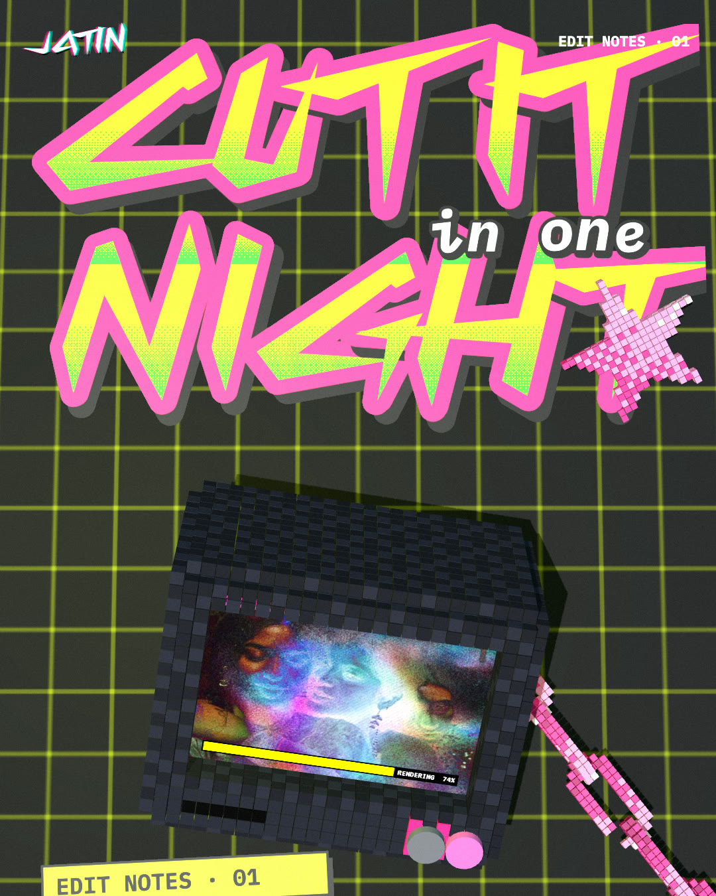<figcaption>R1</figcaption></figure>
  </div>

  <h2>What the references are doing</h2>
  <div class="cols">
    <div class="box"><h3>The two posts</h3><ul>
      <li><b>Giant hand-made type</b> fills the frame, letters jostling, thick rough marker outline.</li>
      <li><b>One real object</b> (a TV, a notebook) photographed with real light and a real shadow. That's where the quality comes from.</li>
      <li><b>Voxel props</b>: pixel objects in 3D, lit like plastic toys.</li>
      <li>A plain surface with a grid, <b>one tilted sticker label</b>, and two type voices: one loud, one clean.</li>
    </ul></div>
    <div class="box"><h3>The 1:40 talking reel</h3><ul>
      <li>One fixed system: the <b>talking head cut out, bottom centre</b>, and a <b>caption box in the same spot every time</b>.</li>
      <li>Everything else changes: <b>a new full-bleed image on every phrase</b> (~2–3s).</li>
      <li>Cheap to make, never boring. The consistency is what makes it look designed.</li>
    </ul></div>
    <div class="box"><h3>The 40s high-effort reel</h3><ul>
      <li>A <b>built world</b> (one set, three colours) that the type lives inside.</li>
      <li><b>Kinetic type in depth</b>: words behind and in front of the subject, letters swapped like a ransom note.</li>
      <li><b>Roto silhouettes filled flat colour</b>, <b>retro OS windows</b> as story beats, collage pages on paper.</li>
      <li>Cuts every 0.5–1s, a new idea on every beat.</li>
    </ul></div>
  </div>
  <div class="refs">
    <figure>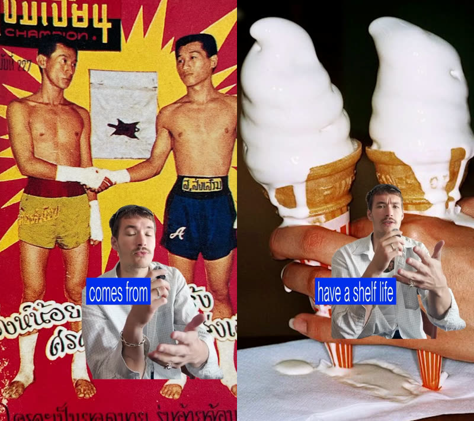<figcaption>Talk format: fixed cutout and caption, the world changes per phrase.</figcaption></figure>
    <figure>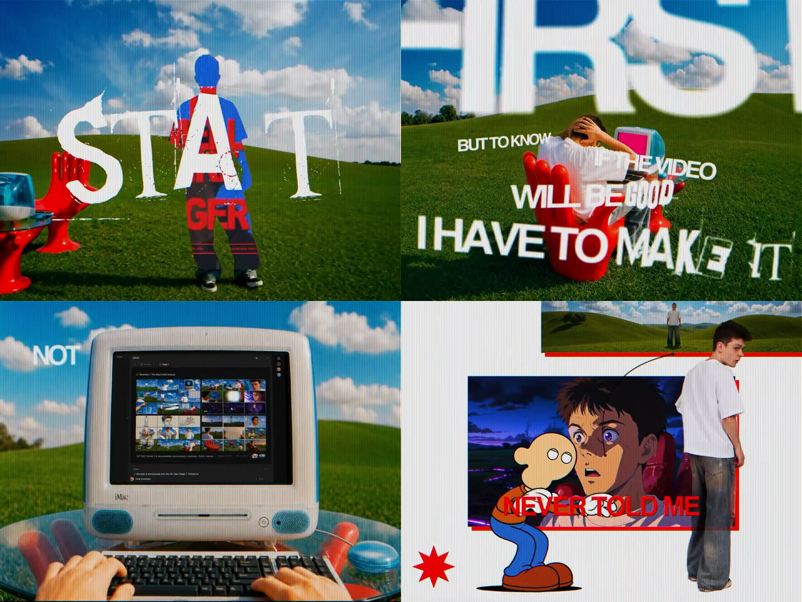<figcaption>High-effort: type in depth, a built world, OS windows, collage.</figcaption></figure>
  </div>

  <h2>How it maps onto your language</h2>
  <div class="map"><table>
    <thead><tr><th>Their move</th><th>Your version</th></tr></thead>
    <tbody>
      <tr><td>Yellow hand-lettering, red marker outline</td><td>Cyberway Riders, acid fill printed with ink dots and a dithered green foot, thick rough <b>pink</b> outline, hard ink drop. Letters jostled per glyph.</td></tr>
      <tr><td>Voxel props</td><td>Your <b>pixel-piece chain</b> as real voxels (links interlock, one breaks), P5 stars, sparkles, your site's <b>pixel cursor</b>, a voxel CRT. Colours stepped through your Bayer ramps.</td></tr>
      <tr><td>A real photographed object</td><td><b>Your photos as physical prints</b>: white border, curl, real shadow. Your work is the object.</td></tr>
      <tr><td>White grid paper</td><td>A <b>black tile floor with the grout glowing in the accent</b>: the site's grid floor, seen from above. Black stays the ground.</td></tr>
      <tr><td>Tilted red banner</td><td>Your accent plate: ink rule, ink drop, Plex Mono italic.</td></tr>
      <tr><td>Blue caption box</td><td>An accent plate in the same spot every time, ink mono, tilted 2°.</td></tr>
      <tr><td>Cutout host</td><td>Your ABOUT sticker treatment: B/W cutout, accent rim, red/cyan ghosts.</td></tr>
      <tr><td>Retro OS windows</td><td><b>JATINSPACE</b> windows: you already own this world from PROJECTS.</td></tr>
      <tr><td>Blue/red silhouettes, ransom type</td><td>Flat pink roto silhouette; ransom letters mixing Cyberway, VT323 and Plex italic on acid chips.</td></tr>
    </tbody>
  </table></div>

  <h2>Reels · talk format (the 1:40 kind) · still round 1</h2>
  <p>Your note: the reels need a lot more effort. They wait until the posts are locked.</p>
  <p>The cutout and the caption never move; the world behind changes on every phrase: your photo → shard field → voxel props.</p>
  <div class="reels">
    <figure>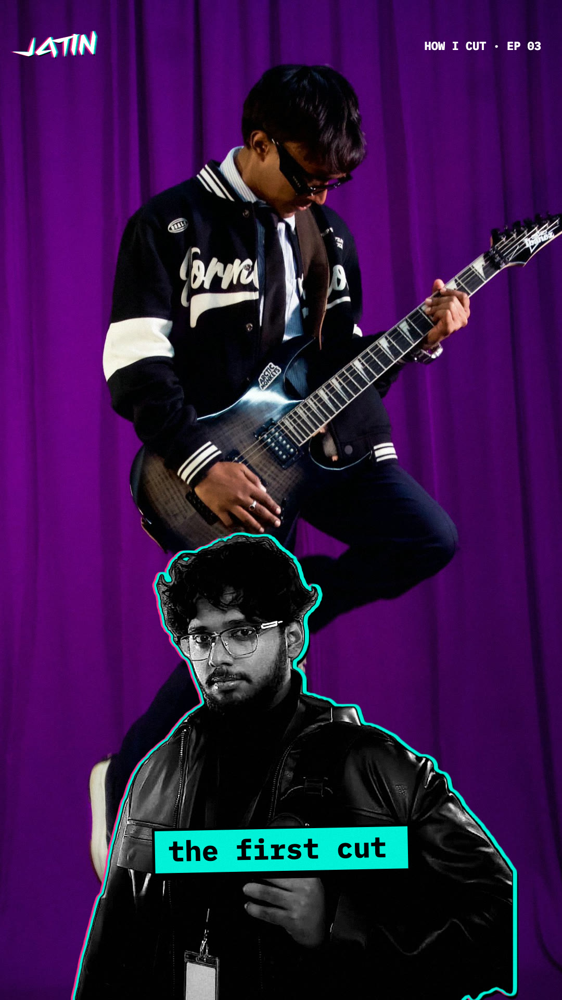<figcaption>Phrase 1: your work behind.</figcaption></figure>
    <figure>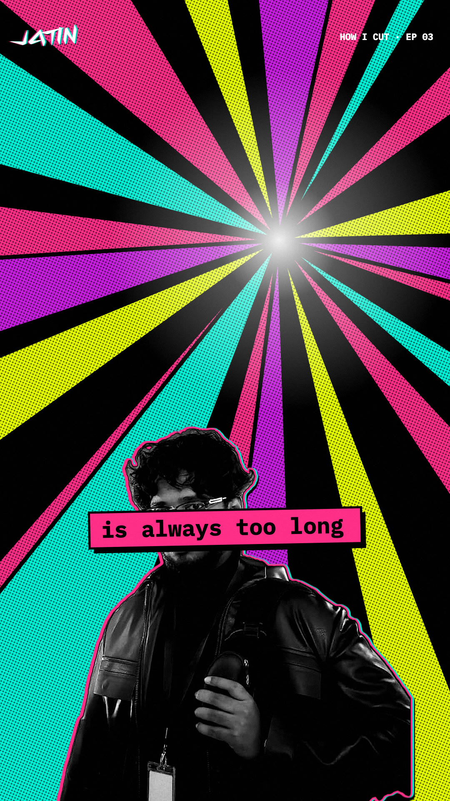<figcaption>Phrase 2: shard field.</figcaption></figure>
    <figure>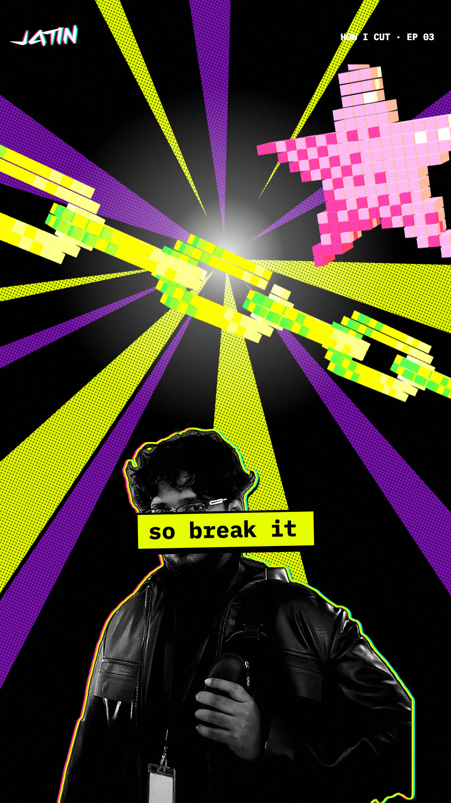<figcaption>Phrase 3: the props.</figcaption></figure>
  </div>

  <h2>Reels · high-effort (the 40s kind)</h2>
  <div class="reels">
    <figure>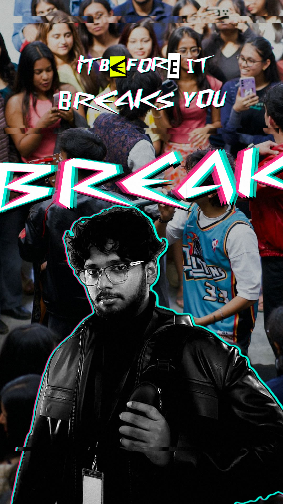<figcaption>A word behind you, its last letter in front; ransom type; slice glitch.</figcaption></figure>
    <figure>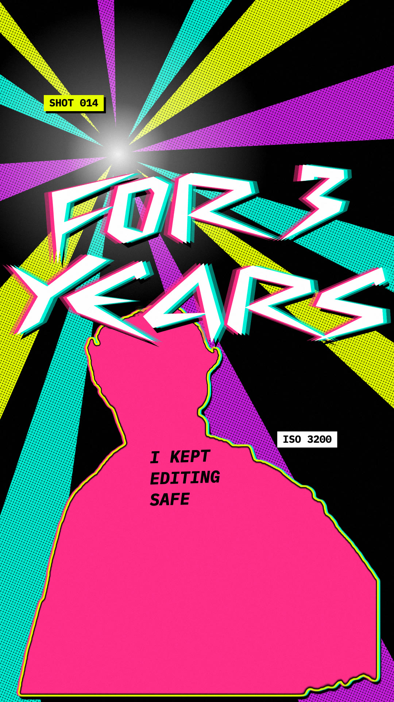<figcaption>Roto silhouette, flat pink, text inside it.</figcaption></figure>
    <figure>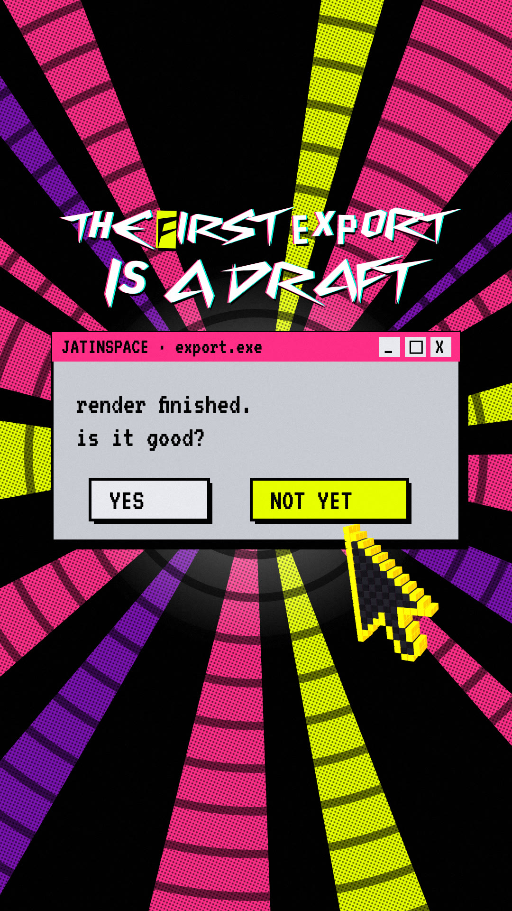<figcaption>A JATINSPACE window as the story beat.</figcaption></figure>
    <figure>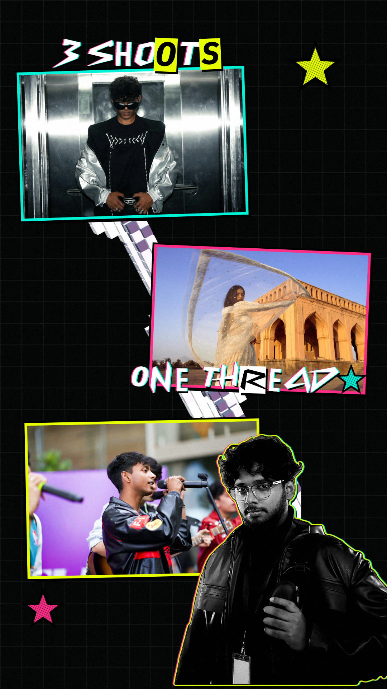<figcaption>Collage page: three shoots, one thread.</figcaption></figure>
  </div>

  <h2>Where it stands</h2>
  <div class="honest">
    <p><b>Working:</b> the type treatment, the voxel chain, your prints with real shadows, the fixed talk system, the JATINSPACE beat.</p>
    <p><b>Not there yet:</b> the floor still reads a little grey, not deep black; the type panels are flat cut-outs with no thickness; the high-effort frames are stills, so the motion that sells them (type flying in depth, the snap) isn't shown yet.</p>
    <p><b>Round 3 (posts):</b> the ground is the site's world; the chain is the site's chain; the type, the cursor and the light are kept.</p>
    <p><b>Still open:</b> the CRT reads as a flat black box from above. It could become the site's own beige computer. The reels wait until the posts lock.</p>
  </div>
</main>
